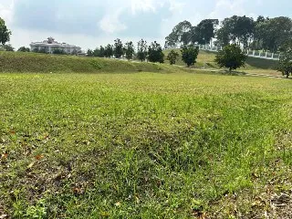
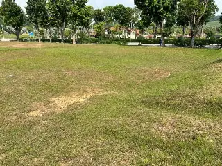
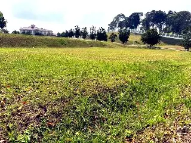
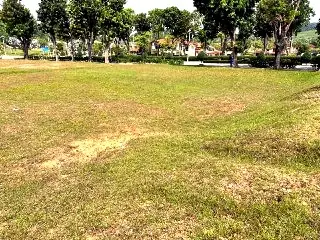
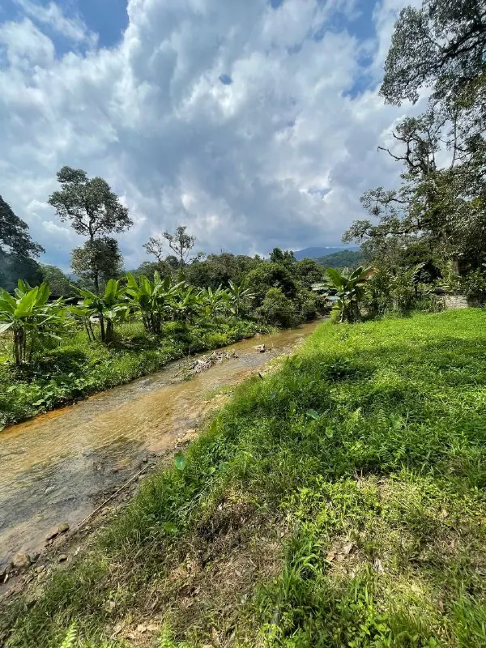

| Keluasan | 19,367 sqft / 1,799 sqm · RM134/sqft |
|---|---|
| Pegangan (tenure) | Freehold |
| Kategori guna tanah | Bangunan |
| Zoning | Perumahan |
| Sekatan | Open |
| Jenis geran (individu / kongsi) | Belum ada dalam rekod — perlu diisi medan baharu |
| Syarat nyata | Belum ada dalam rekod — perlu diisi medan baharu |
| Topografi (rata / landai / berbukit) | Belum ada dalam rekod — perlu diisi medan baharu |
| Akses jalan | Belum ada dalam rekod — perlu diisi medan baharu |
| Kemudahan asas (TNB / air / telco) | Belum ada dalam rekod — perlu diisi medan baharu |
| Tanaman sedia ada | Belum ada dalam rekod — perlu diisi medan baharu |
| Status semakan | MyLOT / i-Plan — 2026-09-09 |
Bungalow land premium di Presint 10, Putrajaya — kawasan komuniti elit berhampiran kediaman rasmi Perdana Menteri. Tanah seluas 19,367 sqft (1,799 sqm) berstatus Freehold Open, sesuai untuk kediaman eksklusif. Hanya 150 meter ke pintu masuk kediaman PM, dikelilingi jiran menteri dan VVIP, dengan akses mudah ke jalan antara bandar Putrajaya.

Presint 10, PutrajayaFasa 2: peta interaktif dengan sempadan lot (polygon) yang boleh ditekan.
Harga RM134/sqft bagi 19,367 sqft / 1,799 sqm dalam kawasan Presint 10, Putrajaya. Pada Fasa 3, blok ini boleh memaparkan carta harga komparabel kawasan (sumber transaksi & iklan sedia ada) supaya pembeli nampak nilai sebenar sebelum berunding.
Kami boleh atur lawatan tapak dan tunjukkan sempadan lot serta akses jalan sebenar.
Mock-up: borang belum disambung ke sistem.
Freehold = pegangan kekal; Open = tiada sekatan pemilikan (boleh dimiliki semua kaum).
Kategori guna tanah Bangunan dengan zoning Perumahan. Syarat nyata dan had pembangunan perlu disemak di pihak berkuasa tempatan sebelum membina.
Pelan sebenar dan pelan sempadan boleh diminta melalui butang "Minta pelan & geran" — dokumen penuh dihantar terus kepada pembeli yang serius.